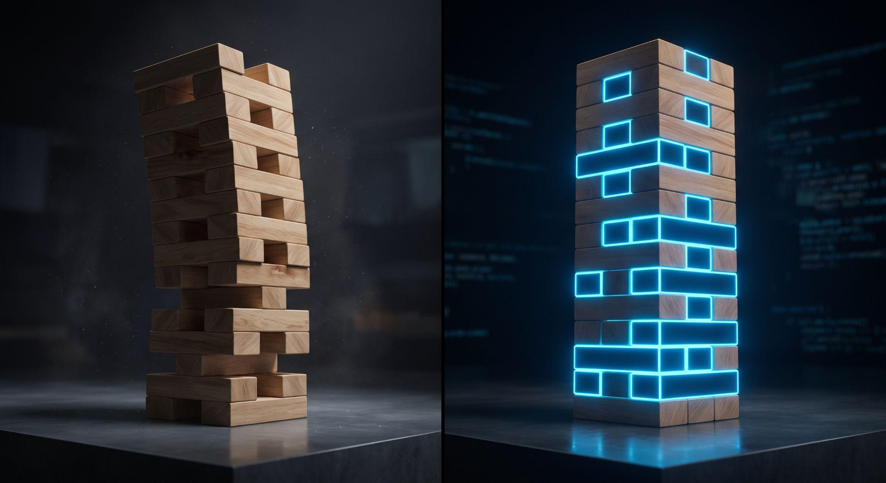

SOVEREIGN ENTERPRISE BRIEFING
SOVEREIGN ENTERPRISE BRIEFING
Agentic Transformation
for India’s Energy Security
Operationalizing AI from the control room to the boardroom. Closing the unseen fractures across upstream, midstream, and downstream operations.
Oil & Gas is a High-Stakes Business Where Every Micro-Friction Compounds
In an industry governed by massive capital commitments, billions leak in the invisible seams between workflows

Deepwater Asset Spread & Concession Gravity
Once an exploratory rig mobilizes or a 30-year PSC is signed, capital burn is continuous. A single micro-delay or miscorrelated curve cascades directly into balance-sheet impairment.
Select a Micro-Friction to Trace Balance Sheet Loss
What Causes Value Loss? The Swiss Cheese Model of Compounding Gaps
Catastrophes and delayed First Oil do not stem from single blunders, but from latent micro-gaps aligning across interlocking workflows
Multi-Run Curve Splicing Seam
Three Systematic Traps That Siphon Upstream Margins
A MECE framework categorizing how operational lag, janitorial tasks, and dark data silos drain capital efficiency
Downhole Decision Velocity: 18 Hours vs 42 Seconds
Why Does Operational Velocity Stall?
The Anatomy of Friction: A Day in the Asset Team
How specialized domain superstars are weighed down by mechanical friction that deterministic math can solve in seconds
Multi-Run Curve Splicing & Wireline Normalization
11:00–13:00: Renaming inconsistent curve mnemonics from 3 different wireline logging contractors.
14:00–15:30: Capturing screen snips to build morning briefing deck for rig supervisor.
15:30–18:00: Only 2.5 hours remaining for actual water saturation ($S_w$) modeling and net-pay evaluation.
The Friction Tax On This Desk
Mapping the Unseen Fractures Across Oil & Gas Operations
An interactive diagnostic console revealing where data latency, manual janitoring, and lost provenance compromise asset value
| Operational Persona | 1. Ingestion | 2. Alignment | 3. Correlation | 4. Modeling | 5. Real-Time | 6. Archival |
|---|---|---|---|---|---|---|
| ● Petrophysicist | Header QC |
FRACTURE #1
⚡
Manual Splicing (90m)
Cable stretch depth error
|
Normalizing | Sw / Porosity | Rig Standby |
FRACTURE #2
⚡
Lost Laptop History
Zero audit provenance
|
| ● Geologist | Mudlog PDF | Markers |
FRACTURE #3
⚡
Bypassed Pay Gaps
1,000s offset logs unread
|
Facies Maps | Landing Ops | Static Versioning |
| ● Geophysicist | SEGY Load |
FRACTURE #4
⚡
Time-Depth Drift
Checkshot sync errors
|
Horizons | Inversions | Pore Pressure | Surveys |
| ● Reservoir Eng | SCAL Tables | Perm Match | Connectivity | Dynamic Model |
FRACTURE #5
⚡
Water Coning Lag
Choke adjustment lag
|
PRMS Books |
| ● Drilling Eng | DDR Reports | MWD Sync | Collision Scan | Torque / Drag |
FRACTURE #6
⚡
Casing Shoe Mismatch
$150k/day rig idle
|
Well Summary |
Manual Wireline Log Splicing
Multiple wireline logging runs over identical borehole depths suffer from cable stretch (2.9 cm to 1.8 m shifts) and tool calibration drift. Specialists spend 90–120 minutes manually aligning curves in desktop software while rigs wait on standby.
Five Non-Negotiable Criteria for Enterprise Transformation
An interactive architectural scorecard comparing traditional software approaches against governed agentic microservices
| Criteria | 1. Legacy Monoliths | 2. Ad-Hoc Scripts | 3. Governed Agents |
|---|---|---|---|
| 01 · Autonomous | ✕ Manual Queue | △ Partial Cron | ✓ Sub-Second Event |
| 02 · Domain Physics | ✓ Native Rules | △ Brittle Code | ✓ Cognitive + Physics |
| 03 · Deterministic | ✓ Deterministic | ✓ Math-based | ✓ C-Engine Math Solvers |
| 04 · Governed Audit | △ Siloed Logs | ✕ Unversioned Local | ✓ BigQuery SHA-256 |
| 05 · Surgical Seams | ✕ $20M Monolith | △ Isolated Islands | ✓ Edge Microservices |
Introducing the Agent: Physics-Backed, Governed Microservices
A dual-engine system separating cognitive orchestration from compiled, deterministic numerical mathematics
Zero Hallucination on Curve Physics
The LLM is strictly decoupled from numerical computation. All physical values, depth shifts, and calibration adjustments are executed by compiled C-solvers running on Cloud Run.
Human Retains 100% Sign-Off Authority
The agent acts as an autonomous tire-less co-pilot. It prepares publication-grade SPWLA tracks and presents confidence scores; the specialist retains final approval before committing to production.
Zero Platform Disruption
Plugs into the hollow gaps between existing software (Petrel, Techlog, SAP, Maximo). Zero rip-and-replace of monolithic software suites; zero retraining of asset teams.
The Jenga Tower: Stabilizing the Enterprise Block by Block
Why small, unmonitored operational gaps cause organizational wobble—and how agentic microservices fortify the enterprise

The Cost of Unplugged Operational Seams
You don't notice a Jenga block leaving—until the whole organizational tower begins to wobble under capital pressure. In upstream drilling, a 90-minute log delay burns ₹25 Lakhs; in midstream, an unmonitored transient leaks product for 12 hours.
From 90 Minutes of Fatigue to 3 Seconds of Mathematical Certainty
Demonstrating one surgical block plugged in real time: Kansas Well A-12 multi-run wireline log splicing and recalibration
Subjective Screen-Nudging & Night-Shift Latency
Specialists spend 90 to 120 minutes per well manually dragging curves in desktop software. Due to cable stretch under high downhole tension, depth shifts are visually guessed. Drilling rigs wait on standby for composite approval before casing shoe decisions.
Step 1 & 2: Sovereign Basin Discovery & Provenance Verification
Instant natural language asset interrogation paired with pre-execution BigQuery governance verification
[INFO] Evaluating multi-run overlaps via stratigraphic depth markers...
| Candidate Well | Logging Passes | Interval (MD) | Action Required |
|---|---|---|---|
| Well A-12 | RUN1, RUN2, RUN3 | 1,066.2 – 1,865.9 m | OVERLAP SPLICING NEEDED |
| Well B-04 | RUN1 (Single) | 850.0 – 1,420.0 m | COMPLETED |
| Well C-09 | RUN1, RUN2 | 1,200.0 – 2,100.0 m | LOCKED IN PRODUCTION |
Step 3 & 4: SPWLA Visual Tracks & Sub-Meter Character Matching
Preserving petrophysical muscle memory with declarative A2UI interactive tracks and verified numerical cross-correlation